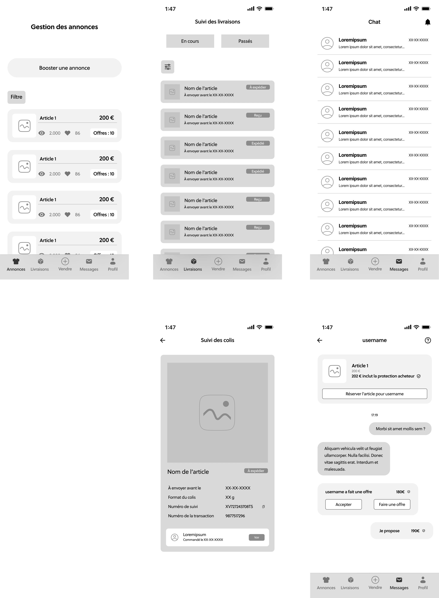
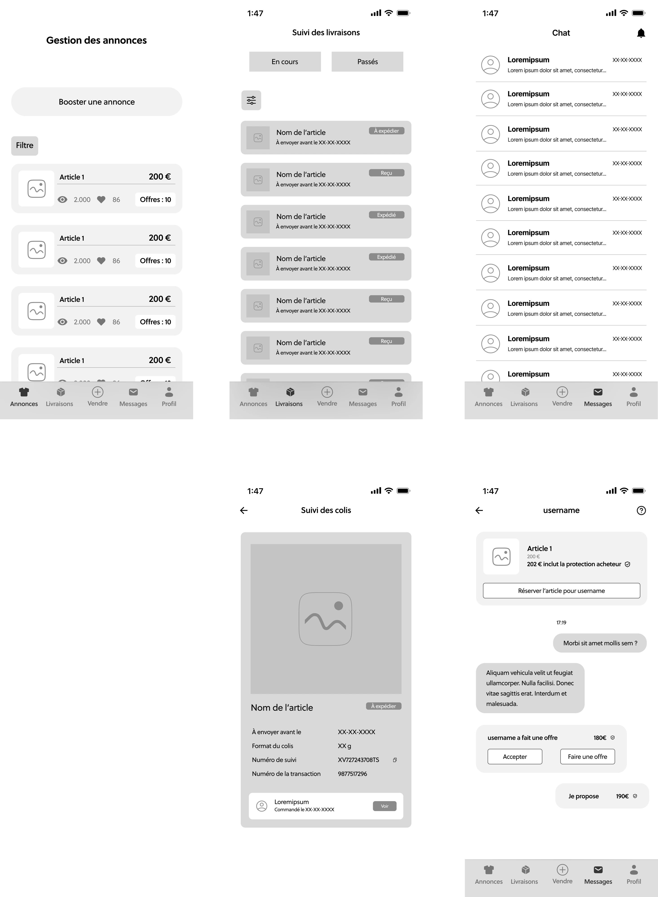

[ avantages de la solution ]
Navigation simplifiée : En séparant les informations et les fonctionnalités des vendeurs et des acheteurs, nous rendons la navigation plus intuitive et efficace
Expérience utilisateur améliorée : Les utilisateurs comprennent facilement les changements d'interface et peuvent accéder rapidement aux fonctionnalités qui leur sont utiles
Gestion optimisée : Les vendeurs peuvent mieux gérer leurs annonces, suivre leurs ventes et comparer les offres, tandis que les acheteurs peuvent trouver facilement ce qu'ils cherchent et gérer leurs communications sans confusion
Sécurité et fiabilité : Les acheteurs se sentent en sécurité grâce aux outils de vérification et aux garanties contre les arnaques

 
